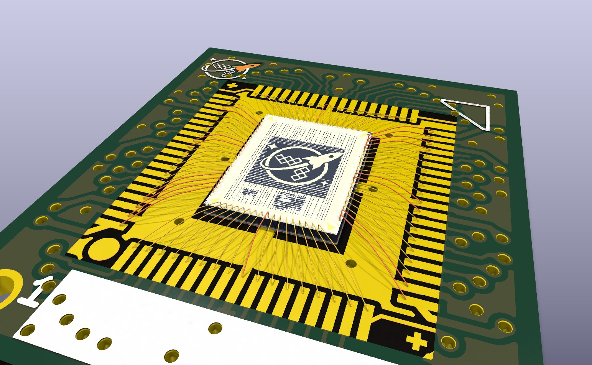
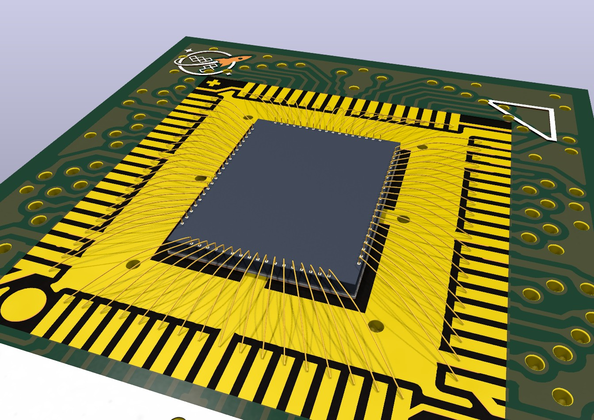
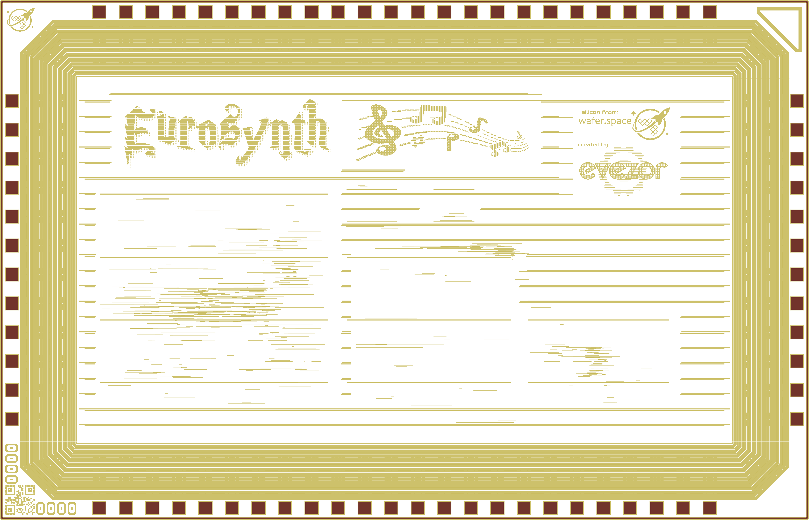
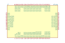
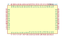
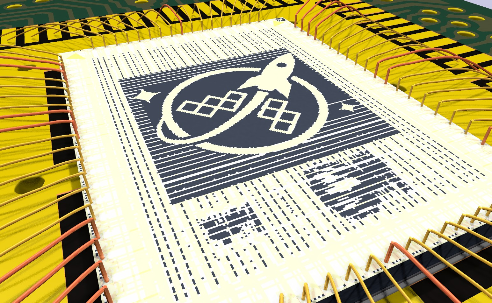
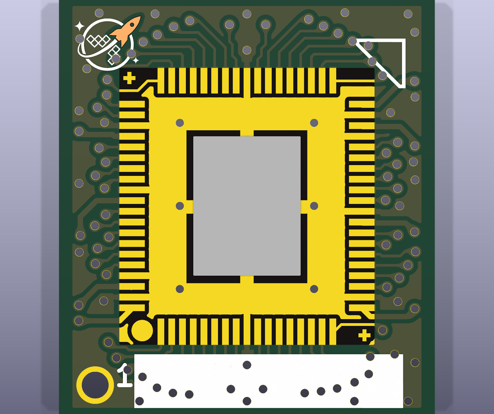
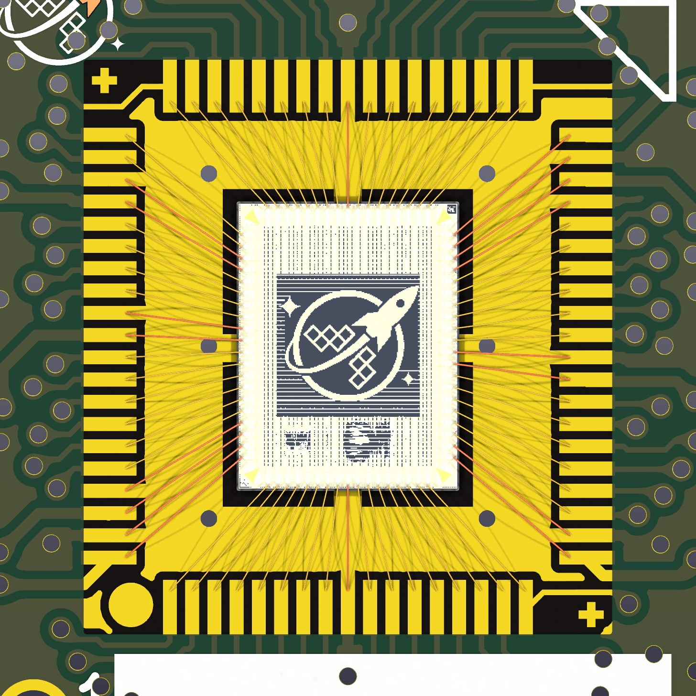
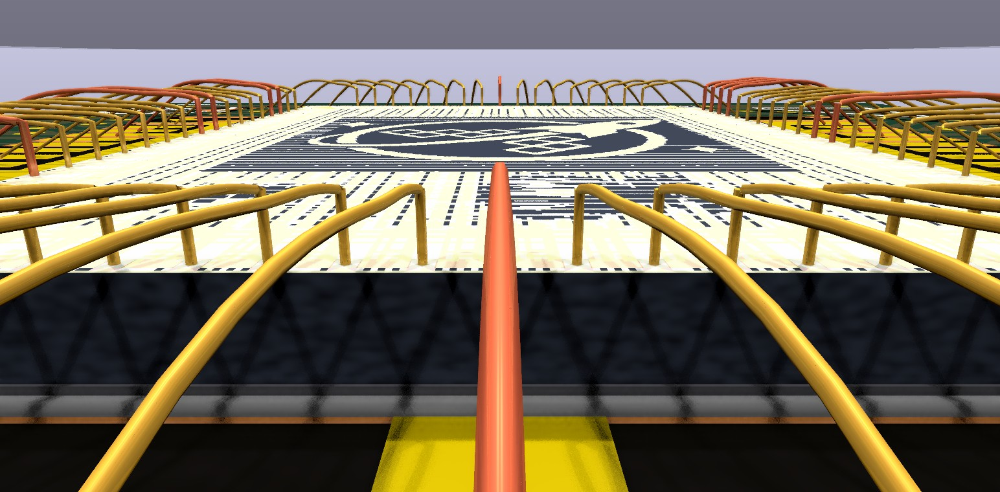
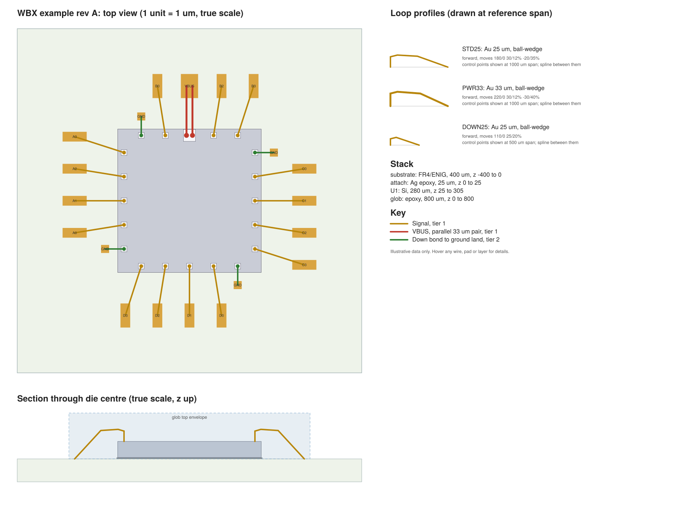

Wire Bond Lifecycle
The GDS defines the die, KiCad defines the assembly, and everything else is generated from those two. Each stage works with whatever data exists so far and tells you what it had to assume.

Sources of truth
- GDS: the die, its pads, sometimes nets
- KiCad: board, connections, wire types
- Everything else is generated and never edited
Proven on real data
Wire types
- Your 5 profiles already fit one model
- Shape family + material + diameter + direction
- "Custom" works like a custom pad shape
- The library lives in the board file
Where it stands
- Prototype die kit, wires, 3D
- Not built KiCad panel, export from KiCad
- 4 questions for you
1The whole lifecycle
Four lanes: silicon flow, die kit, KiCad, outputs. Only the middle two are ours to build, and the numbered dots are the places data may enter.
Decided KiCad is the base model. Other EDA tools are out of scope, and if someone wants to use one, that's up to them.
Decided Keep it light. People can take any layer and skip the rest, so nothing here may depend on someone adopting the whole stack.
2Who owns what
Every fact gets one owner. A copy anywhere else is a generated copy that can be thrown away.
| Fact | Owner | Copies | If they disagree |
|---|---|---|---|
| Die size, pad locations, pad sizes | GDS | Manifest, footprint, 3D model, SVG | GDS wins; rerun the die kit |
| Pad order | Convention applied to the GDS, unless an override says otherwise | Manifest, symbol pin numbers | Warn on any change, because it moves every connection |
| Net names on the die | GDS labels when present, otherwise the overrides file | Manifest, symbol pin names | Schematic pin stays linked by number; the name updates |
| Which pad bonds to which land | KiCad | Wire footprints, SVG, bondlist | KiCad wins |
| Wire type per wire | KiCad: rule from the library, with a per-wire override | SVG, DXF | KiCad wins |
| Wire geometry | Nobody: calculated from pad, land and type | Wire footprints, SVG, DXF | Regenerate |
| Stack: thickness, attach, cap | KiCad project, seeded from the overrides file | Section view in SVG, 3D model | KiCad wins |
| Bond force, power, machine program | Bonding engineer | None | Out of scope |
.wb.svg becomes a generated handoff file. It is still the viewable, checkable drawing, but nothing reads it back into the design.3Working with partial data
Try it: tick what you have, and see what each output becomes. Nothing fails silently, and every assumption gets named.
The rule behind this: an output is only blocked if the missing data can't be guessed safely. Everything else runs with a stated fallback, so a board can be started long before a chip exists.

4The GDS
It holds the die outline and the pad openings every time. It holds net names most of the time, as text labels your flow already writes.

render_gds.py. Dark red is the pad opening layer, 37/0. The QR code at bottom left is the anchor for pad numbering.| What we read | Where it is | Reliability, on your 37 shuttle designs |
|---|---|---|
| Die outline | Top cell bounding box | Always |
| Pad openings | 37/0, inside pad cells, so the hierarchy must be walked. A size filter drops the seal ring. | Always. Two designs also have internal probe pads, which a position filter drops. |
| Net names | Text on 81/10 or 53/10, at each pad centre | 34 of 37 designs name every pad. 28 pads have only a generic label, and 103 have none. |
| Pad corner marker | QR cell gf180mcu_ws_ip__id, or __qrcode_id on eurosynth | Bottom-left on all 37, and on eurosynth. The cell name differs, so match both. The __logo cell at top right looks like a QR in a render, but it isn't one. |
| Instance names | Removed by LibreLane's KLayout stream-out, kept by Magic as attribute 61 | Not usable today without a flow change |
Decided Net names are welcome but not required. The die kit treats them as an upgrade, and section 6 shows the result both ways.
5Pin 1 and direction
A light convention: start at the QR corner and go counter-clockwise. On all three run 2 boards tested, the QR sits at land 1 and the die goes on at 0°.
The rule Decided
Pad 0 is at the QR corner, counting counter-clockwise, and pad n goes to land n+1. It's a convention only, and nothing goes into the GDS for it, so it also works on chips that have already been fabricated.
The check Proven
Every rotation, both directions and every starting offset were tried, about 590 pairings per board. This rule at 0° scored best on all three, and forcing the old 180° onto the 1x1 gave 2632 crossings.
The run 2 boards
| 1x1 | 1x0p5 | 0p5x1 | |
|---|---|---|---|
| Die used | WSLG, 74 pads (run 1 stand-in) | eurosynth, 72 pads (run 2) | HZ80, 72 pads (run 1 stand-in) |
| Land 1 | Bottom left | Bottom left | Bottom left |
| Die on the board | 0° | 0° | 0° |
| Bond ring footprint on the board | 180° | 0° | 180° |
| Wires on the right land and pad | 74/74 | 72/72 | 72/72 |
| Span | 1897 to 2757 µm | 1847 to 2955 µm | 1802 to 3115 µm |
| Nets agree, die to board | 18/18 supply; the rest are pad_k names, in order | 72/72 by name | 16/16 supply; 56 signals not comparable |
| Wires drawn in the footprint, same edge and order | 74/74 | 72/72 | Only 2 drawn, too few to tell |
The footprint rotations match die_placement_rotation_deg in ws-bonding-diagrams/boards.json, which was written separately. The fourth run 2 board, 0p5x0p5, hasn't been run. Pin 1 is easy to misread on these boards: the rocket silk is now top left and no longer marks it. The real markers are the circle in the bond ring and J1 with its silk "1", both at bottom left.
EURO_chip_top_2_7_1x0.5.pdf labels the pad beside the QR bidir_PAD[26] and puts clk_PAD at top right. The GDS, the board net, the slot config and the pin map all put clk beside the QR. Names match the GDS only after shifting by half the ring: 72/72 on EURO, 74/74 on WSLG and 72/72 on HZ80. Other run 2 designs are likely affected but weren't checked. The cause looks like extract_dies.py lines 139 to 144 in ws-bonding-diagrams, which number the pads assuming the die has been turned, but only turn it when display_rot is set. Wires on page 3 are placed by position and look right, so this appears to be a labelling fault, not a bonding one. That repo hasn't been changed.Decided This stays light. If someone's die has no QR, or a different corner, the tool assumes bottom-left and says so, and an overrides file can change it. Anyone can hand-draw a footprint and skip the die kit entirely.
Lean KiCad pin 1 is pad 0, so land 1 pairs with pad 0. Record die rotation in the board's frame, and measure it from the board instead of assuming it, because the footprint's own rotation differs between boards.
6The die kit
One command turns a GDS into everything KiCad needs. It already runs in prototype, with and without nets.
# prototype today, name to be decided python proto_diekit.py chip_top.gds.gz kit --png die.png chip_top: 3932.0 x 2531.0 um, 72 pads {'B': 24, 'R': 12, 'T': 24, 'L': 12}, internal dropped 0, anchor BL, nets 72/72 first pads: [(0, 'B', 'clk_PAD'), (1, 'B', 'rst_n_PAD'), (2, 'B', 'bidir_PAD[0]'), (3, 'B', 'bidir_PAD[1]')] python proto_diekit.py chip_top.gds.gz kit --no-nets --no-anchor --tag _bare chip_top_bare: 3932.0 x 2531.0 um, 72 pads {...}, anchor NONE, assumed BL, nets 0/72

kicad-cli. Pin names come from the GDS, and pins sit on the side of the symbol that matches the die.
P0, P1… and connections keep working, because they follow the pin number.F.Fab, with no copper at all. The anchor is the die centre.
| Output | Needs | Status |
|---|---|---|
Manifest .die.json | GDS geometry | Proven eurosynth, WSLG, HZ80 |
Footprint .kicad_mod | Manifest | Proven KiCad loads and plots it |
Symbol .kicad_sym | Manifest; labels optional | Proven KiCad loads, upgrades and plots it. Pin types are a guess from the name. |
3D model .wrl | Manifest; render optional | Proven in kicad-cli pcb render. Thickness is assumed: 280 µm die, 25 µm attach. |
| STEP model | Manifest | Not built needed for mechanical export |
7The KiCad board
Decided for now: the electrical connection is on the land, the die is mechanical, and each wire is its own object. Copper stays exactly as it was.

J1 are at bottom left.
Three ways to represent this in KiCad
| A. Die pads as copper examples/kicad, today | B. Wires inside one footprint your mezzanine board | C. Mechanical die, wire objects this prototype | |
|---|---|---|---|
| Fab outputs | Die pads plot as copper, so unusable | Clean | Clean. Gerbers match the original on all three run 2 boards |
| Per-wire data | Yes | No | Yes |
| Moving the die | Wires stay behind | Wires come along | Regenerate. A group survives saving; moving one in the GUI is untested. |
| Where the net lives | Die pad and land | Land | Land |
| 3D wires | No | No | Yes, a model per wire |
| DRC noise | 23 unconnected, permanently | None added | 0 unconnected, no schematic warnings; the new footprints are flagged as having no library |
Decided, for now Option C. The symbol's pins map to the bond lands, as your mezzanine board already does, so KiCad's copper and netlist stay honest. The die is a mechanical object, like a heatsink with holes in the right places.

moves strings as your profiles. Heights and thicknesses are true to the data; the camera is close, so perspective exaggerates the near wires. The orange wires are PWR33, at 33 µm rather than 25 µm.What the DRC run reported
| Source board, then generated | 1x1 | 1x0p5 | 0p5x1 |
|---|---|---|---|
| Unconnected items | 0, 0 | 0, 0 | 0, 0 |
lib_footprint_issues | 13, 89 | 13, 87 | 13, 87 |
missing_courtyard | 5, 81 | Ignored by the project | Ignored by the project |
Schematic parity extra_footprint, without board_only | 75 | 73 | 73 |
The same, with board_only | 0 | 0 | 0 |
| Total violations | 27, 179 | 22, 96 | 20, 94 |
The rises all come from the prototype's new footprints, which have no real library and, on the 1x1, trip the courtyard check. The real tool needs to fix those. Other categories didn't move. The Gerbers are identical, but the saved file isn't line for line: pcbnew reorders zones on save, and it does the same to the untouched source board.
8Generating wires
Once the die kit and bond ring are on the board, the from and to of every wire can be worked out. You only intervene for exceptions.
- Pair. Die pad n goes to land n+1. When both sides have a net, compare them, and report any mismatch instead of silently wiring it. A board that uses slot template names needs handling here: HZ80's signal order is its own, so a plain comparison would flag all 56 signals.
- Pick a type. Apply the rules from the wire library in order, such as "supply nets get
PWR33". Later rules can use span or net class. - Calculate. Bond points come from the pad centre and from a point on the land, and the loop comes from the type and the actual span.
- Write. One footprint per wire on the Wirebond layer, with its fields and its 3D model. The real tool should lock them, since they are generated.
- Check. Bond on pad, net agreement, wire gap, die edge clearance, height against the cap.
Proven Pairing, type choice, geometry, writing and the net comparison ran on three run 2 boards, 218 wires in all, with no crossings. Types are chosen by net name: 56 STD25 on each board, with 18, 16 and 16 PWR33. Editing a type in the board and regenerating changed only that type's wires. Not yet run: step 5 through wbx.py. A separate script did check crossings and wire ends.
boards.json. This is question 8.Treat wires like a zone fill Lean
In KiCad you don't draw a zone's fill. You set its rules and press a key. Wires can work the same way. This also solves the die-moves-and-wires-stay-behind problem: move the die, regenerate, and the geometry follows.
Exceptions the rule must allow Lean
Two parallel wires on one pad, like VBUS in the example. Down-bonds from a pad to a ground ring. Pads left unbonded. All three are stored as per-pad settings, so they survive regeneration.
9Wire types
Your pad analogy holds. A type is a shape family plus a few sizes, with custom as the escape hatch, and it fits any span.
| A KiCad pad has | A wire type would have | Values |
|---|---|---|
| Type: SMD, through-hole, connector | Bond method | ball-wedge, wedge-wedge |
| Shape: rect, round, oval, custom | Loop family | triangle, trapezoid, m, low, jedec4, custom |
| Size X, Y | Loop height, and where the peak sits | µm and % of span |
| Drill | Wire diameter | 25 µm, 33 µm… |
| Layers and finish | Material | Au, Al, Cu |
| Orientation | Direction: which end is bonded first | forward, reverse |
| Custom shape polygon | Moves string | 180/0 30/12% -20/35% |
| Net class default | Rule that assigns the type | Supply nets → PWR33 |
Loop bench
Your five profiles from profiles.wb.svg, drawn at true scale from their real moves strings, plus the JEDEC 4-point shape and a custom row you can type into. Change the span and each type adapts, which is the reason a type can be applied to every wire.
wbx.py. These profiles are illustrative targets and have not been run on a bonder.Is the set of shapes really small?
Mostly yes, with one caveat. No public catalogue of shapes turned up, so this list is assembled from separate sources.
| Family | Evidence | Your profiles |
|---|---|---|
| Triangular | Named as one of two typical shapes in US 7,262,124 and US 6,343,733. No flat top. Riskier when the wire passes close to the chip. | DOWN25 is close |
| Trapezoidal | The other typical shape in those patents, with a flat upper section, preferred where chip contact is a risk. | STD25, PWR33 |
| M-shaped | A trapezoid whose top bows down, used for low loops. US 6,112,974; compared with Q-loop in a 2025 study, and with Q and S loops in Kung et al. | None yet |
| Reverse | First bond on the substrate, used for low die-side profiles. Direction is a separate setting, as your file has it. | REV25 |
| Wedge | Altium treats ball-wedge and wedge-wedge as the type setting. It is a bond method more than a shape. | WEDGE25 |
| JEDEC 4 and 5 point | The JESD59 simulation models, built into tools such as Ansys. I couldn't read the paid standard, so this comes from Ansys's help and an MIT-licensed add-in. The 4-point shape rises to h1, runs flat for 1/8 of the span, then goes straight to the far end, so 200/0 0/12.5% writes it. The 5-point shape also needs angles, which moves can't express yet. | 4-point: JEDEC4 above |
Where the type library lives Decided
In the .kicad_pcb itself, so it travels with the board. These are the options, and what happened with each on KiCad 10.0.0, using a real load and save:
| Option | Result | What that means |
|---|---|---|
Fields on a footprint: one WBLIB footprint, with a hidden wb_type_STD25 field per type Proven | Survives, with or without a project file, on all three run 2 boards. Regenerating reads from it. | Plain text that diffs cleanly, and it should be editable in KiCad's normal footprint dialog (not yet tried by hand). Adds one more library warning to DRC. |
Our own token in the file, or a generated object with our own type | Fails The board won't load: kicad-cli reports "Failed to load board", and pcbnew crashes. | This is what a truly native object would be. It needs KiCad's parser to change. |
| Board properties (the example does this) | Wiped Saved at first, then SynchronizeProperties empties them unless the project lists them too. | Would still mean keeping a second copy in the project file. |
| Embedded file, added in KiCad 9 | Not tried The call isn't reachable from Python. | Would travel in the board, but probably not as readable text. Not worth chasing. |
| Net classes | Not tested here | Can't describe a loop; still useful as the rule that picks a type. |
KiCad has no wire bond object today. Its Python API has no bond-related names, and the pad properties are BGA, castellated, fiducial, heatsink, mechanical, press-fit and test point. Wishlist item #2272 is closed, but I found no sign that anything was built. What native should mean next is question 6.
10What already exists
No single standard describes a bonding design, but useful pieces exist. Borrow them, and label where each came from.
You asked what definitions and conventions are out there. This is what I found, with how far to trust each one. I'll keep adding to it as more turns up.
| Topic | What exists | How solid | What it means for us |
|---|---|---|---|
| Loop shape | JEDEC JESD59, 1997: 4-point and 5-point wire models, with h1, h2, alpha and beta. | A real standard, written for simulation. Paid, so I read it second-hand. | The nearest thing to a shared definition. Added as a family, which also lets simulation tools read our shapes. |
| What a profile holds | Altium: loop height, diameter, two angles, ball or wedge. Cadence: a 3D path with material, diameter and direction, and it ships a Kulicke & Soffa profile set. | Shipping tools. The Cadence page blocked me, so that detail is from a search summary. | Our type model already has these settings. Direction and material are confirmed as belonging in it. |
| Loop names | Q, S and M loops in published studies. "Low", "ultra-low" and "crimped" appear in process guides. | Real words, but no public definition. They seem to belong to bonder vendors. | Don't build around them. Keep a free-text name a bonding partner can fill in later. |
| Everyday words | Knowles: first bond (the ball, normally on the chip) and second bond (the stitch, normally on the substrate). Tutorial: reverse bonding puts a bump on the die, then a ball on the substrate, then a stitch on the bump. | Consistent across sources. | Use these words in our fields and docs. Our REV25 direction setting matches. |
| Pad numbering | Europractice: counter-clockwise, and for QFN-style packages "generally starting upper left". They also ask that pad 1 be identified by a "1" or a logo near it. | One house's rules. I found no general standard. | Our direction is the common one. Our corner differs, which is fine for a light convention. The QR does the job of their marker. |
| Wire limits | Europractice's numeric tables, checked below. Your own boards.json has wire_max_mm of 3.3, 3.4 and 3.2 for three of the run 2 boards. | Concrete and usable, but for their process, not yours. | Good default warnings. This is question 7. |
| Quality testing | MIL-STD-883, called the most common standard: visual, pull and shear tests. | Solid, but I didn't read the standard itself. | It's about testing finished bonds, not describing a design. It matters when you get to silicon. |
| File formats | I found no standard file for bond connections. open.cob.json is the closest open effort, and bonders use vendor formats. | Absence of evidence only. | Nothing to conform to, which is why generated outputs and a bonding partner's input matter later. |
| Others in KiCad | On the KiCad forum, a user scripts DEF to die footprint and symbol, is drafting requirements, and has discussed it with KiCad developers. An older thread asks for much the same as you. | Forum posts. | Someone to compare notes with if you pursue a native object. |
Your boards against Europractice's rules
| Rule | Limit | 1x1 / WSLG | 1x0p5 / eurosynth | 0p5x1 / HZ80 |
|---|---|---|---|---|
| Wire length, 25 µm Au | 6 mm at most | 1.90 to 2.76 | 1.85 to 2.95 | 1.80 to 3.12 |
| Angle from the pad's normal | 45° at most | 42.9° | 45.4° on 4 wires | 39.9° |
| Crossing wires | None | 0 | 0 | 0 |
| Pad opening, 25 µm wire | 55 µm at least | 60 µm | 60 µm | 60 µm |
| Pad pitch, 25 µm wire | 65 µm at least | 180 µm | 129 µm | 138 µm |
| Pad opening, 33 µm wire | 70 µm at least | 60 µm | 60 µm | 60 µm |
Measured from the generated wires with the prototype's 0.2 mm land point, so the angle and length change if that moves. Numbers are from Europractice's tables 1 and 2. That PDF's footer says "strictly confidential" even though it's posted publicly, so link to it instead of copying it around.
PWR33 is a type I made up for the prototype, and these rules wouldn't allow 33 µm wire on a 60 µm pad. Those orange wires are placeholders, not a recommendation. They're one assembly house's limits, not physics, so a different bonder may allow more. But nobody on the project can check this yet.11Outputs
All generated from KiCad. The viewable SVG remains the handoff and review document.

.wb.svg example. Next it gets the GDS render in place of the grey die, using the placement proved earlier: <image> inside the die group with a second flip, pixel-exact against all 20 pads.| Output | For | Status |
|---|---|---|
.wb.svg | Review, assembly house, tools | Proven a throwaway parser rebuilt the example byte for byte from the KiCad board. The render still needs adding to the writer. |
| Bondlist CSV | Offline programming | Today written from .wb.svg, not loaded in a bonder tool |
| 3D DXF | Offline programming | Today generated and read back, not loaded in a bonder tool |
| STEP with wires | Mechanical, enclosure checks | Not built |
| Operator PDFs | Die placement and bonding pages | Today your temp-reticle_diagrams scripts; they could read the same manifest |
wbx.rd accepts only an unrotated die. Run 2 dies are at 0° on the board, so an exporter shouldn't need to write a rotated one. This is inferred, because wbx.py hasn't been run on these boards. The old 74-pad board, at 180°, still has the limit.12When something changes
Because geometry is calculated, most changes are one command. The tool only stops to ask when connections would move.
| What changed | What happens | Asks you? |
|---|---|---|
| New GDS, same pads | Render and 3D model refresh | No |
| Pad moved slightly | Footprint updates, wires regenerate, checks rerun | Only if a check fails |
| Net renamed in the GDS | Symbol pin name updates, pin number stays | Shows the list |
| Pad count or order changed | Refuses until you confirm, showing old against new | Yes |
| Die moved on the board | Regenerate wires | No |
| Land moved in layout | Regenerate wires | No |
| Wire type edited | All wires of that type regenerate | No |
| Stand-in replaced by real GDS | Same as a pad moving, plus a diff against the template | Only if pads differ |
| Bonded part measured | Future: feed measured loops back into the type | Later |
13Where to inject, and where not
Seven safe places, each for a specific kind of data. Three places to leave alone.
| # | Where | Inject what | Verdict |
|---|---|---|---|
| 1 | RTL port names | Meaningful net names. They flow all the way to the GDS labels by themselves. | Yes cheapest place of all |
| 2 | Step after stream-out in LibreLane | Pad numbers or instance names, on a non-mask layer | Not now the convention is enough; nothing goes into the GDS for this |
| 3 | Overrides file beside the GDS | Anchor, no-bond pads, thickness, net names for an unlabelled die | Yes the main home for "other metadata" |
| 4 | Schematic | Nets, net classes | Yes normal KiCad work |
| 5 | Bond ring footprint | Land positions, numbering | Yes normal KiCad work, per COB |
| 6 | Wire type library | Shapes, materials, assignment rules, as fields on a footprint in the board | Yes travels with the board |
| 7 | A wire's fields in KiCad | Per-wire type override, bond sequence, tier | Yes survives regeneration |
| ✕ | .wb.svg, DXF, bondlist | Anything by hand | No overwritten on export |
| ✕ | Label layer 81/10 in the GDS | Extra labels such as pad numbers | No I'd expect LVS to read these as nets; untested |
| ✕ | Generated wire coordinates | Hand drags in KiCad | No lost on regeneration; change the rule or the land |
14Build order
Each phase is useful by itself, and all of them can work from the command line before any KiCad panel exists.
Phase 1 · Die kit
Turn the prototype into a tool: overrides file, partial data report, STEP, footprint library cleanup.
✅ All 37 shuttle designs produce a kit, with assumptions listed.
Phase 2 · Wire generator
wbx wires board.kicad_pcb: pair, type, calculate, write. Safe to rerun, keeps overrides.
✅ Move the die, regenerate, and the checks pass.
Phase 3 · Type library
A WBLIB footprint in the board: families including JEDEC 4-point, and rules. Checks with labelled limits.
✅ Changing one type updates all of its wires and their 3D models.
Phase 4 · Export from KiCad
KiCad board to .wb.svg, bondlist, DXF. Rotated dies. Render in the SVG.
✅ Mezzanine board exports and passes wbx check.
Phase 5 · KiCad panel
A plugin with a wire type picker and a Regenerate button, wrapping phases 2 to 4.
✅ Full loop done inside the KiCad GUI.
Phase 6 · Real silicon
One die through to a bonded part, then measured loops compared against the types.
✅ A bonding partner, once you have one, accepts the handoff.
What hasn't been tested
- The KiCad GUI. Everything here ran through
kicad-cliand pcbnew's API. Nobody has opened these boards by hand yet. - The plugin route. KiCad's docs say the IPC API in 9 and 10 needs a running GUI, and forum threads report trouble creating copper pads through it. We add no copper, which should help, but this needs a spike. Phases 1 to 4 can use file generation, and don't depend on it.
- Moving a group of a die and its wires in KiCad. The group survives a save, but nobody has dragged one.
- The prototype's assumptions: die thickness, attach height, and a 0.2 mm land bond point on every board.
- Run 2 coverage. There's no run 2 reticle locally, so WSLG and HZ80 are run 1 stand-ins, checked against the run 2 PDFs for size, pad count and names. That eurosynth's
final_chipis exactly what was submitted is inferred. The0p5x0p5board hasn't been run. wbx.pyon these boards. It needslxml, which isn't installed. The prototype used a local copy ofwbx.loop, which matched on 12 test cases.- Any bonder or assembly house. Nothing here has been near a real machine.
15Still to decide
Four questions, each with a box for your answer. Q2 is carried over, and the other three are new.
Lean: Yes. Overrides store intent; geometry is always calculated.
Lean: Both, in that order. Use footprint fields now, since they work in KiCad 10 today and anyone can ignore them. Write up a real wire object once our fields settle, and take that to the KiCad developers.
Lean: Yes, as warnings that name their source and can be changed per board, with your wire_max_mm values taking priority. A bonding partner's limits would replace them later.
Lean: A per-board setting stored with the types, defaulting to 0.2 mm in from the land's inner end, because that gives the shorter wire. Your drawings use 0.2, 0.5 and about 0.16 mm.
Answered last round
| Question | Your answer |
|---|---|
| Q1. Mechanical die pads, nets on the lands? | Decided Yes, for now. |
| Q3. Pad numbers in the GDS? | Decided No. It's a convention, kept light for people who don't want the whole stack. |
| Q4. Your bonding house's loop names? | Decided There's no bonding house and no definitions yet. Use public sources, and see section 10. |
| Q5. Type library in a project file? | Decided No, in the board file, as a native feature. Q6 follows from this. |
Sources
- Ansys bondwire notes and fusion-bond-wire, for the JEDEC shapes
- Europractice ASIC packaging design rules, 2024
- Knowles wirebonding notes, wire bonding tutorial and eesemi on loop profiles
- Kung et al. on Q, S and M loops, listing only
- KiCad #2272, its Launchpad original, and forum threads on chiplets and interposers and a chip on board add-on
- Altium wire bonding documentation
- US 7,262,124, US 6,343,733, US 6,112,974 on loop shapes
- Q-loop and M-loop fatigue study (2025)
- JEDEC JESD59 listing
- open.cob.json, which also has GDS import and KiCad symbol and footprint export
- KiCad IPC API for add-on developers and forum thread on copper pads
- Local:
chip-on-board-wire-bonded-pcbs/run-2,eurosynth/final_chip,ws-run1/layout/reticle.oas,ws-bonding-diagrams(boards.json,extract_dies.py,bonding-diagrams/ws-run2),examples/profiles.wb.svg - Prototype scripts:
planning/wire_bond_lifecycle/proto/